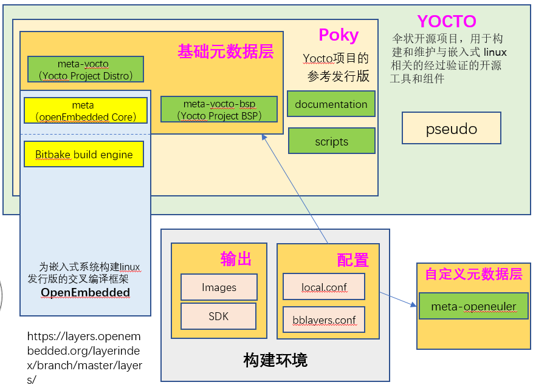

Yocto介绍¶
Yocto是什么¶
Yocto(Yocto Projec，后简称Yocto)是Linux基金会（Linux Foundation）旗下的一个开源协作项目，该项目起源于 OpenEmbedded项目（OpenEmbedded Project，后简称OpenEmbedded），并与之协作，可帮助开发人员在各种硬件架构上创 建基于Linux的定制系统，这些系统专为嵌入式产品而设计，不区分硬件体系架构。Yocto提供了灵活的工具集和开发环境，允许全 世界的嵌入式设备开发人员通过共享技术、软件堆栈、配置和最佳实践，用于协作创建定制Linux镜像。
Yocto为构建定制化的嵌入式Linux发行版提供一系列模板、工具和方法来简化定制Linux开发，允许更换软件配置和构建，避免重复工作 以及不必要的维护。Yocto鼓励跨各种应用程序和设备类型的创新，支持多种硬件架构，包括X86(32位和64位)、ARM（32w位和64位） 、RISC-V、PPC和MIPS等。随着硬件BSP支持的增加和BSP格式的标准化，这个项目创造了巨大的价值。
Yocto和OpenEmbedded共享一个核心元数据集合，称为OpenEmbedded-Core。OpenEmbedded为各种体系结构、功能和应用程序 提供了一套全面的元数据, 而Yocto专注于为一组核心架构和特定单板提供功能强大、易于使用、可互操作、经过良好测试的工具、元数 据和BSPs。
Yocto主要特点
广泛应用于整个行业
架构无关
镜像和代码移植容易
灵活
适用于资源受限的嵌入式和物联网设备
全面的工具链支持
执行机制大于策略
支持层模型
支持部分组件构建
按照严格的时间表发布
丰富的个人和组织生态
二进制可再现性
许可证清单
Yocto构建流程¶
Yocto的构建流程如下图所示，开发者通过指定一些用户配置文件(例如local.conf)，其中包含针对不同软件的配方文件、层， 目标开发板的配置文件和打包策略配置文件等。Yocto的执行引擎Bitbake会去读取这些配方和配置文件，然后
去配方和配置文件指定的地方下载源代码(source fetching)。
下载后，将源码提取到本地工作区中，在工作区中打补丁(patch application)、执行配置和编译等步骤
分析软件包如何拆分成子包以及软件包之间的关系
根据打包策略生成具体的软件包（deb, rpm或者ipk包）
对软件包进行测试(QA tests)，包括一些通用的质量检查和健全性检查
以软件包为单位生成Linux镜像和软件开发套件(SDK)

在使用Yocto的过程中，这个工作流将会随着实际使用的组件和工具而改变。
通常，Yocto构建的工作流由几个功能区域组成：
用户构建配置（User Configuration）：可用于控制生成过程的元数据(bblayer.conf/local.conf)。
构建元数据层（Metadata Layers）：提供软件、板子和发行版元数据的各种层，通过元数据层可以有效实现复用和抽象
软件包源代码（Source Files）：构建使用的软件包源码，可以来自上游发布的软件包、本地代码目录或者软件代码仓(例如git，svn，http，ftp）。
构建系统（Build System）：在Bitbake控制下的进程。这个模块扩展了Bitbake如何获取源代码、应用补丁、完成编译、分析生成包的输出、创建和测试包、生成镜像 以及生成交叉开发工具。
软件包源（Package Feeds）：包含输出包（RPM、DEB或IPK）的目录，这些输出包随后用于构建由构建系统生成的镜像或软件开发工具包（SDK）。如果启用了运行时包 管理，还可以使用web服务器或其他方式复制和共享这些软件包，以便于在运行时扩展或更新设备上的现有镜像。
镜像（Images）：生成的镜像，包括内核镜像、根文件系统镜像等。
应用开发工具（Application Development SDK）：生成的包含交叉编译工具链、头文件和库文件的开发组件。
主要组件和工具¶
Yocto参考实现（Poky）中集成了OE-Core Metadata。Yocto Project Version 1.0之后，Yocto和 OpenEmbedded同意共同工作并共享一个共同的核心元数据集（OE-Core），其中包含以前在Poky中发现的大部分功能。这种合作实现了长期的 OpenEmbedded目标，拥有更严格控制和质量保证的核心。共享一组核心元数据使Poky成为OE-Core之上的集成层。Yocto结合了各种组件，如 Bitbake，OE-Core，脚本“集合”，以及其构建系统的文档。要使用Yocto工具和组件，需要下载（clone）Poky并使用它来引导构建自己的 发行版。
Metadata¶
Metadata元数据是Yocto的关键元素，用于构建Linux发行版。元数据包含在一些文件中，当构建镜像时构建系统会去解析它们。通常，元数据包括 配方、配置文件和其他引用构建指令本身的信息，以及用于控制要构建的事物和影响构建方式的数据。
元数据还包括：
用于指示被使用软件的版本和来源信息的命令和数据;
对软件本身（补丁或辅助文件）进行的更改或添加，用于修复错误或自定义特定情况下使用的软件。
OpenEmbedded Core就是一组重要的经过验证的元数据集合。
配置文件（Configuration Files)：包含变量的全局定义、用户定义的变量和硬件配置信息的文件，主要是.conf文件。它们告知构建系统需要构 建什么，并放入镜像image中以支持特定平台。比如conf/local.conf可以配置机器配置选项，分发配置选项，编译器调整选项，常规通用配置选项 和用户配置选项。conf/bblayers.conf中可以添加用到的layer层路径，从而在编译时将他们添加进去。
配方（Recipes)：元数据（metadata）的最常见形式，主要是.bb、.bbappend、.inc、和.bbclass。一个recipe包含一个用于构 建程序包的设置和任务（说明）列表，配方描述将从哪里获取源码，以及应用哪些补丁，描述了和其他软件包的依赖关系，以及配置和编译选项。它们存 储在层（layer）中。bbappend和bb的区别主要在于bbappend是基于bb的，功能是对相应的bb文件作补充和覆盖，类似于’重写’的概念。 .bbclass文件，包含在配方文件之间共享的有用信息。.inc文件包含一个开源软件多版本之间共享的信息。
层（Meta layers)：即各种meta-xxx目，将Metadata按层进行分类，是一些列相关配方的集合(同一个目标文件的相关配方，配置等文件）。层允许合 并相关的元数据以自定义构建，并隔离多个体系结构构建的信息。例如要定制一套支持特定硬件的系统，可以把与底层相关的单元放在一个层中，例如BSP （Board Support Package）层。在实际的Yocto应用中，可以包含任意数量的可用层，并通过在它们之后添加你自己的层来自定义构建。尽管你在单个项目 中将所有内容都保留在一层中很诱人，但是元数据的模块化程度越高，应对将来的更改就越容易。
Bitbake¶
Bitbake一种软件构建自动化工具，是解析指令（配方）和配置数据的调度程序和执行引擎，像所有的build工具一样(比如make，ant，jam)控制如何去构建 系统并且解决构建依赖。但是又区别于功能单一的工程管理工具(比如make)，Bitbake不是基于把依赖写死了的makefile，而是收集和管理大量之间没有依赖 关系的配方，在解析阶段之后，Bitbake创建一个依赖树来对所有构建任务进行排序和调度，最后构建定制化的镜像。
Bitbake是一个Python程序，它由用户创建的配置驱动，可以为用户指定的目标执行用户创建的任务，即所谓的配方。配置、任务和配方是用一种Bitbake DSL （领域特定语言）编写的，其中包含变量和可执行的shell或Python代码。它允许shell和Python任务在复杂的任务间依赖性约束下工作时高效并行地运行。 简而言之，Bitbake是一个构建引擎，它通过以特定格式编写的配方来执行，以执行任务集。
Bitbake是作为构建软件的工具而制作的，因此具有一些特殊功能，例如定义依赖项的可能性。Bitbake能够解决依赖关系并将它必须做的工作按正确的顺序排 列，然后执行这些任务。此外，构建软件包通常包含相同或非常相似的任务。常见任务例如：下载并提取源代码、运行配置、运行make或简单地编写日志消息。 Bitbake提供了一种以可配置方式抽象、封装和重用此功能的机制。
更多信息可以参考 Bitbake手册
OE-Core¶
OE-Core（OpenEmbedded-Core）是由基础配方，类和关联文件组成的元数据，是一些脚本（shell和Python脚本）和数据构成的自动构建系统。在许多不同的 OpenEmbedded派生系统（包括Yocto Project）中，它们都是共有的。Yocto和OpenEmbedded都维护OpenEmbedded-Core。它是OpenEmbedded 社区开发的原始仓库的精选子集，该原始仓库已被精简为一组较小的，经过持续验证的核心配方，从而形成了受到严格控制且质量保证的核心配方集。
Poky¶
Poky是Yocto参考嵌入式发行版OS，实际上是一个有效的构建实例，它包含构建系统（Bitbake、OpenEmbedded Core、meta-poky、meta-yocto-bsp）以及一组 元数据，可帮助你开始构建自己的发行版。
要使用Yocto的工具，需要下载poky，并且用它来引导你自己的发行版。值得注意的是，poky不包含二进制文件–它是一个工作实例，用来告诉你如何从源 代码构建自己的定制Linux发行版。你可以以任何你需要的方式去更改、拷贝或使用poky，从而来创建定制嵌入式Linux。
poky最强大的特性之一是构建的每个方面都由元数据控制。通过添加扩展功能的元数据层，可以使用元数据来扩充这些基本镜像类型。例如，这些层可以为图像类 型提供额外的软件堆栈，为其他硬件添加板级支持包（BSP），甚至可以创建新的镜像类型。
Pseudo¶
Pseudo是一个类似fakeroot的工具， 用于在看似具有root权限的环境中执行命令。在构建软件时，可能需要像root权限执行操作。例如，定义文件的所有权或权限信息。
Pseudo是一个程序，可以直接使用，也可以作为LD_PRELOAD使用，这两种方法都实现这些操作，就像用户确实具有系统管理员权限一样，即使他们是普通用户。
Pseudo与fakeroot有很多相似之处，但它是一种新的实现，它改进了使用fakeroot所遇到的问题。 Poky现在广泛使用Pseudo作为fakeroot的替代品，但也可以在许多其他用 例中独立使用。为了跟踪需要root权限的操作产生的“假”文件所有权和权限，Pseudo使用了SQLite3数据库。该数据库存储在 ${WORKDIR}/pseudo/files.db 中，用于单个配 方。将数据库存储在文件中而不是内存中可以在任务和构建之间提供持久性，这是使用fakeroot无法实现的。
当允许执行通常为root用户保留的某些操作（例如do_install、do_package_write*、do_rootfs和do_image*）时，某些任务更容易实现。例如，do_install任务受益于能 够将已安装文件的UID和GID设置为任意值。
允许任务仅执行root操作的一种方法是要求 Bitbake 以root身份运行。但是这种方法比较麻烦，而且存在安全问题。实际使用的方法是在“假”root环境中运行受益于root权限的 任务。在此环境中，任务及其子进程认为它们以root用户身份运行，并查看文件系统的内部一致视图。只要生成最终输出（例如包或image）不需要root权限，一些早期步骤在假root 环境中运行的事实不会导致问题。
如果你添加自己的任务来操作与fakeroot任务相同的文件或目录，那么该任务也需要在fakeroot下运行。否则，该任务无法运行仅限root的操作，也无法看到其他任务设置的虚假文 件所有权和权限。你还需要添加对virtual/fakeroot-native:do_populate_sysroot的依赖，给出以下内容：
fakeroot do_mytask () {
echo do something like root
}
do_mytask[depends] += "virtual/fakeroot-native:do_populate_sysroot"
为什么使用pseudo，而不是fakeroot，请参考：https://github.com/wrpseudo/pseudo/wiki/WhyNotFakeroot
fakeroot使用，请参考：http://man.he.net/man1/fakeroot
软件包源¶
当Yocto构建生成镜像或SDK时，它会从位于构建目录中的软件包源区域获取包。如下图所示：

软件包源是构建过程中的一个中间步骤，用来临时存储包的目录，由变量和正在使用的特定包管理器的组合确定。Yocto提供了生成不同包类型的类， 可以通过PACKAGE_CLASSES变量指定要启用的类以支持相应格式的软件包。在将软件包放入软件包源中之前，构建过程会通过生成的输出的质量保证（QA） 检查来验证软件包的正确性。
Bitbake使用do_package_write任务生成包并将它们放入包保存区（对于RPM包，do_package_write_rpm）。例如，
考虑使用RPM包管理器并且同时存在对i586和qemu_x86的包架构支持的场景。i586架构的包放在 build/tmp/deploy/rpm/i586 ，
而qemu_x86架构的包放在 build/tmp/deploy/ipk/qemux86 。
层模型¶
层是包含相关元数据的集合，这些元数据告诉OpenEmbedded构建系统如何构建目标。Yocto层模型促进了Yocto 开发环境中的协作、共享、定制和重用。层在逻辑上分离了项目的信息。例如，你可以使用一个层来保存特定硬件的所有配置。隔离特定于 硬件的配置允许你通过使用不同的层共享其他元数据，其中元数据可能在多个硬件中是通用的。
Yocto支持将元数据组织成多个层。层允许你将不同类型的自定义相互隔离。一个典型的Bitbake项目由不止一层组成。 通常图层包含特定主题的配方。像基本系统，图形系统，…等等。
在某些项目中，也可能有多个构建目标，每个目标都由不同的层组成。一个典型的例子是构建一个带有和不带有GUI组件的Linux发行版。 可以使用、扩展、配置层，也可以部分覆盖现有层的部分。这很有用，因为它允许根据实际需要重用和定制。
Yocto层必须按照特定格式组织， 以方便Bitbake在构建过程中找到相应的元数据。
Yocto Project Compatible名称提供了最低水平的标准化，这有助于建立强大的生态系统。 “Yocto Project Compatible”适用于适当的产品和软件组件，例如BSP、其他OE兼容层和相关的开源项目，允许提供者使用 Yocto Project徽章和品牌资产。有关层和OpenEmbedded层索引的介绍性信息可以在软件概述层部分中找到，或者可以在文档中找到一般 信息。
如果你在此处找不到所需的层，请查看OpenEmbedded层索引，该索引包含更多层，但其质量并不像Yocto层那样有保障。